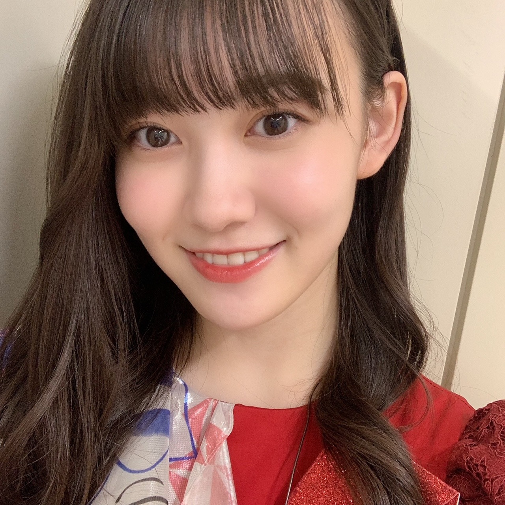
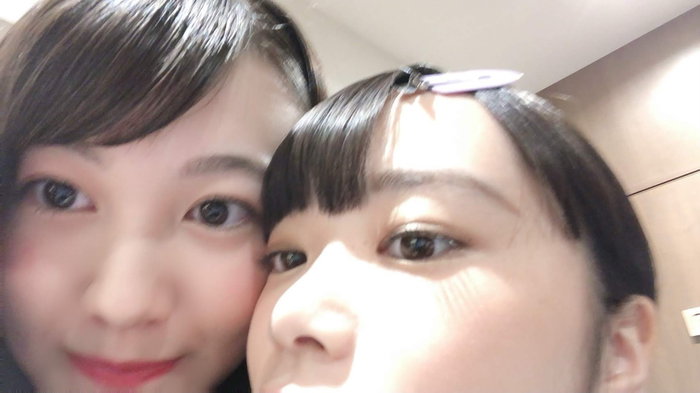
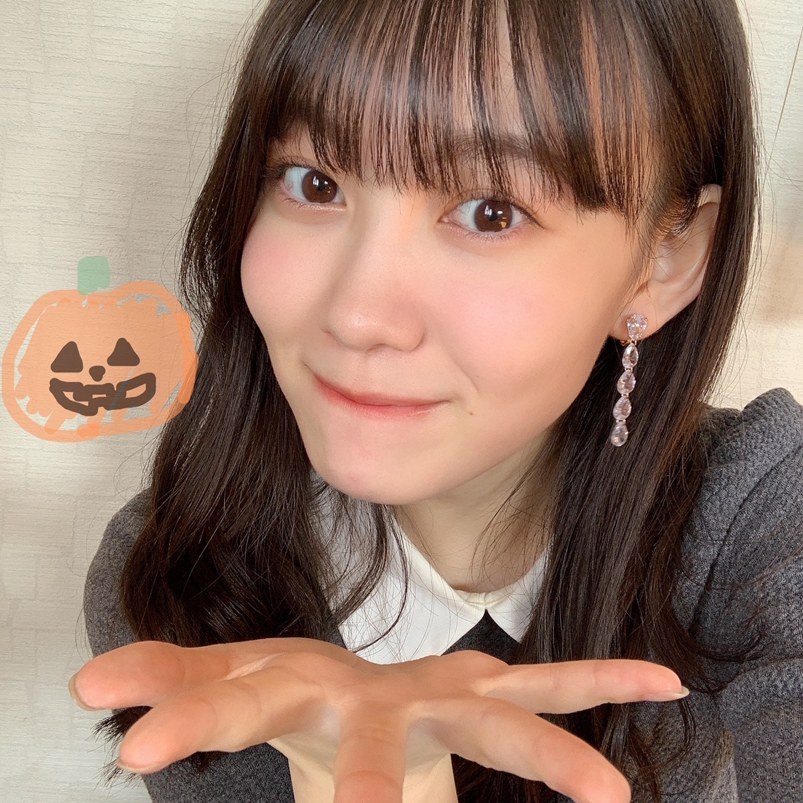

2020/1101Sunあたたかい色 松尾美佑
「Mai Shiraishi Graduation Concert ~
Always beside you ~」
白石麻衣さん、ご卒業おめでとうございます
白石さんに初めてお会いした時、本当に目の前にいらっしゃるのかを疑うくらい美しくて、私はあわあわしてしまいました。
そんな私にもニコッとして下さったこと、
嬉しくてずっと覚えています。
本当に美しくて、キラキラとしていて、
安心させて下さるような白石さんの優しい笑顔が大好きです。
私達新4期生にとって乃木坂46としての初めてのライブは、白石さんとご一緒させて頂く最初で最後のライブでした。
全体でのリハーサルも何もかもが初めてで
出来ない自分に落ち込んだり、不安になったり、でも、本番まで本当に楽しみでした。
モニター越しに輝く白石さんの姿も、
イヤモニから流れる白石さんの歌声も、
そしてステージ上の後ろから見る白石さんの背中も、
全てが美しくて、輝いていて、
気づいたらリハーサルから涙が飛び出てきていました。
近くで白石さんの存在の大きさを全身で感じる事が出来て本当に嬉しかったです。
内側から優しさで溢れていて輝いている白石さんは私の憧れです。
私にできること、私だからできること、
まだまだ見えないものばかりですが
見えないからこそ何があるのか、可能性は無限大
少し斜め上を見ながら、
作り上げてきて下さった先輩方の色を見失わず、自分達の色も探しながら、
私も少しでも乃木坂46の力になれるように精一杯頑張ります。
白石さん、9年間お疲れ様でした。
沢山の希望や感動をありがとうございました
加入したばかりの私にも優しさを分けてくださってありがとうございます。
白石さんの周りを包むキラキラとしたオーラは本当にあたたかい色です。
こんなにも素敵な方と関われたこと、同じステージに立てたこと、一生の宝物です。
一緒に撮ってくださった写真も永遠に宝物にします。
大好きです！

11月になりました
わんわんわんの日ですね
千葉県出身、高校2年生、16歳、
松尾美佑です¨̮
先日はのぎおびありがとうございました¨̮
ちょっと話し過ぎで最後は途中で切れちゃったかもしれなかったです(、._. )、
でも沢山話せて嬉しかったです！
オバケかぼちゃは捕まえられませんでしたが頭にかぼちゃを乗せる事ができて、ハロウィン気分になれて嬉しかったです(੭ ᐕ)੭
皆さんはハロウィン何しました？

私はたこ焼き食べました(๑ت๑)
そして去年のハロウィンはというと、
研修生ツアー中でした〜
1年の過ぎる早さにびびっています。

まともな写真が無い、私とぱる。
1番まともなのがこれでした。
そして！！
10月31日！
さやちゃんんん！
お誕生日おめでとう⸜❤︎⸝
さやちゃんはいつもおしゃれさんです。
あといつも前髪綺麗さんです。
そしていつも気にかけてくれる優しいお姉ちゃんさんでふ。
お目目が綺麗でですね、目が合うといつもドキッとします。( Ꙭ)
楽しい1年になりますように！！
それから今日、渡辺みり愛さん！
お誕生日おめでとうございます！
リハの時についていけずおろおろしていた私達に気づいて声をかけて下さって、すぐに振りを教えてくださって、本当にありがとうございました！
いつも笑顔で挨拶をして下さって本当に嬉しいです！
素敵な1年になりますようにと願っています！
1日遅れでもいいですか？

お菓子ください。
明日は〜
なお〜〜〜〜〜〜〜〜
11月になったね〜
今月は1と6の日に会えますね
また5日後！
ミュウでした¨̮
ばいっっっっっっっ( Ꙭ )/''
昨日の夜すっっっっごい寒かったですね
凍らないように気をつけましょうね(ง ꙭ)ง

PROFILE
新4期生リレー
202104
| SUN | MON | TUE | WED | THU | FRI | SAT |
|---|---|---|---|---|---|---|
| 1 | 2 | 3 | ||||
| 4 | 5 | 6 | 7 | 8 | 9 | 10 |
| 11 | 12 | 13 | 14 | 15 | 16 | 17 |
| 18 | 19 | 20 | 21 | 22 | 23 | 24 |
| 25 | 26 | 27 | 28 | 29 | 30 | |

コメント(178)
ライブお疲れ様！これからも頑張って！
ー質問ー
・写真集を発売するならどこで撮影したい？
・気晴らしではよく何をする？
・乾燥肌に悩んでいるけど、良い対策はあるかな？
ありがとう！次回も楽しみにしているよ。
ブログ更新お疲れ様！！！！
ライブお疲れ様でした。もうね、感動だったね。
改めて乃木坂ってすごく良いグループなんだなって思った。
のぎおびもお疲れ様！
ほとんどライブの感想で終わっちゃった感じみゆちゃんの乃木坂愛が凄いんだなって思った！
ではでは、また次回！次は6の日ですね！
秋田より
Mai Shiraishi Graduation Concert ~ Always beside you ~
お疲れ様でした〜
加入後はじめてのライブとは思えないほど，キラキラしたミュウちゃんの笑顔が輝いていたよ〜
研修生ツアーの経験が活きたのかもですね！
のぎおびも見ました！やっぱり話すのが上手でとても楽しかったです♪
ハロウィンっぽいこと何もしなかったです…
◎カボチャって好き？
ばいばぃ
白石さんの卒コンよかったね。ずっと感動して泣いてたよ。
美佑ちゃんにしか出来へんこと必ずあるはず！
ハロウィンにたこ焼きって関係ないやん！笑って言いながらわしもお好み焼き食べて人のこと言えなかったりする笑笑
今日はこの辺で！またブログ更新楽しみにしてるばい！
栃木より愛を込めて。
ブログ更新ありがとう！
11月になったね(*´罒`*)
今月と来月は1と6の日！
今から2020年最後の日にみゆりんブログだ〜
って嬉しくなってるの！笑
11月も素敵なブログを楽しみにしてる(*´˘`*)♥
昨日1日かけて学校で模試があって
めちゃ疲れてたけどみゆりんのブログで元気になった笑
やっぱりみゆりんブログの力は【偉大】だね☺︎
そして、今日からまた献血ルームで乃木坂46のオリジナルグッズが始まったから早速行ってきたんだ〜
私献血よく行くからみゆりんがイメージキャラクターになる日が来たら嬉しいなっ(⑉• •⑉)❤︎
✂︎- - - - - - - -キリトリ- - - - - - - - - - -✂︎
一枚目の写真可愛すぎる！
巻き髪が上手すぎてどんな風に巻いてるのかとっても気になる
みゆりんの巻き髪の方法今度聞けたらいいなぁ
お菓子あげる(⑉• •⑉)❤︎
ハロウィン 楽しいことした？
【 Trick or Treat 】ってお友達に言ったら
たくさんお菓子もらえて楽しかったけど
みゆりんは貰ったかな？笑
✂︎- - - - - - - -キリトリ- - - - - - - - - - -✂︎
自分でも驚くくらいな長文を毎回送ってて
後から見返して笑いそうになってる今日この頃
今日も質問で終わりにするね☺︎
✽献血したことある？？
✽大勢の前に出る時とか緊張する？
今日も素敵なブログをありがとう☺︎
また5日後楽しみにしてるね(*^^*)
はじめてコメントします。
白石さんの卒業コンサート素敵でしたね。
白石さんは本当に光ってるんじゃないかと錯覚するほど輝いていました。
最高の時間は白石さんだけじゃなく、他のメンバーやミュウちゃんの素晴らしいパフォーマンスもあって生まれたものだと思います。
白石さん、メンバー、そしてミュウちゃん、皆にありがとうをの気持ちでいっぱいです。
ファンとして心から幸せを感じる時間でした。
改めて、卒業コンサートお疲れ様と最高の時間をありがとう。
これからのミュウちゃんの活躍を期待しています。
待ってたよー！
みゆちゃんにしかできないこともあるよ！ずっと応援してるから！！
ハロウィンでしたね…… お菓子僕にもください！！
のぎおび楽しかったです！
ブログまた待ってます！
そしてハッピーハロウィン！お菓子あげたいです笑
まいやんの卒コンお疲れ様でした！ミュウちゃんも先輩たちに劣る事なく素晴らしいパフォーマンスだったよ!
衣装も可愛かったね！
ぱるちゃんとの写真可愛すぎる
また5日が楽しみにしてるねー！
やっぱりあなたは可愛いです。
凍らないように気をつけます。
「お菓子ください」の写真と言葉がぴったりだ！
自撮りうまいね！お菓子だけに！ (？)笑
お元気で！
わんわんわんの日、ナイスです！
もっと語りたかったww
美しかったな感動感激感謝とても良い素晴らしいライブでしたね
ミュウちゃんのこれからの成長も楽しみです乃木坂46の成長も楽しみでワクワクしてます
応援してます頑張ってくださいね
まいやんに頭ぽんぽんされてた
シーンはほっこりしたね。
研修生ツアーの大阪で
みんなを見届けてから一年。
本当の意味で乃木坂のメンバーになれたね。
学業との両立を諦めないでいてくれて
ありがとう！
これからも坂を上るミュウちゃんを
楽しみにしています。
あ、お菓子あげたい(笑)
トリックアトリート！
みゆ！
やっほー！
ひろき(Yandji)です☺️
ブログ更新ありがとー！！！
質問タイムー！！！
いまメンバー間で流行ってることとかある？
また、コメントするね！
では、またねー！
ひろき(Yandji)より
先日はとても素敵であたたかいライブをありがとう
なんで卒業を決めたらみんなとても綺麗になるんだろうねぇ
綺麗なのは嬉しいけど寂しくなっちゃうや
まいやんはほんとに優しい人なんだねぇ
外側だけじゃなく中身も綺麗なんだね
ミュウちゃんの宝物が増えたんだね
ずっとずっと大切にしてね〜
気づいたらあっという間に11月だね！
早いねぇ
しかもすっかり寒くなったよね〜
あったかくしてね〜
のぎおび見たよ！
たくさん話してくれてありがと〜
ハロウィンっぽいこともしてたね〜
あ〜ミュウちゃんにお菓子をたくさんあげたいわ〜
1年ってあっという間だね！
きっとミュウちゃんからしたらとても濃い1年間だったんだろうなぁ
でもこれからどんどん濃い年月を重ねていくんだろうな〜
ずっと応援してます
それじゃまた5日後に！
じゃあね〜
…あ、すいません、あげたすぎて挨拶をわすれておりました。
ミュウちゃんブログ更新ありがとー！
そして！！
今日はちゃんと当日にコメントできた！！
ありがとう日曜日(笑)
ライブお疲れ様でした！
実は…例の件で生では夜明けの最後の最後からしか観れなくて…
でもちゃんとアーカイブで観ましたよ！
まいやんの隣ではなく前のポジだったけど、さすがまいやんっていうか、ちゃんとミュウちゃんの手を取ってくれたこと、すごい嬉しかった…
良かったね！
いい顔してたよ！
これからもミュウちゃんの活躍を観れると思うと楽しみになりました！
＞今月は1と6の日に会えますね
↑じつはこんな考えできるって今気付いた
1と6はミュウの日で覚えておきます
(来月引きずりそうで怖い)
じゃあまたね！
くまくまでした！
ハロウィンとたこ焼き、ナイスです！
お疲れ様でした。
お疲れ様と言うより、すごく素敵でしたよ。元々、チアや運動神経が良いので、想像はしてましたが、すごく手足が長くて、しなやかで、すごく素敵でしたよ。
また、卒コンとは関係ありませんが、のぎおび配信を観させてもらって、喋りも上手だと、、、^_^
まいやん、素敵ですよね。ミュウちゃんも、努力して、感謝、笑顔で、スーパーアイドルになってくださいね。
応援しますね。
ライブみましたよー
白石さんとの良き思い出ができてよかったですね
パフォーマンスもかっこよかったです。
のぎおびもみましたよー
頭のカボチャ、可愛かったです
ありがとうございました。
また新しい乃木坂を支えて、引っ張ってください。
活躍期待していますか
乃木坂 チーム千葉の一員として頑張ってください。
四期生みんなの夜明け最高に盛り上がったし、サビのところでまいやんの前に美佑ちゃんがしゃがんで頭ポンポンされてるの見て微笑ましくて、そこからもう泣いてたな～
一期生のパートはもう泣くよね それにサヨナラの意味のあの演出はガン泣きだったし、最後にまいやんと並んで歌えてよかったね！最高の思い出だー
次の日のぎおびみてたよー 次の日にも余韻が残ってて美佑ちゃんの話を聞きながら僕も振り返ってたよ
個人的には一番好きなセカラバも良かったし、乃木坂のダンスパートの曲が好きなんだよねー 夜明けの前のダンスパートもめちゃくちゃかっこよかった！
昨日はハロウィン+やんちゃんの誕生日だったね
何かプレゼントはあげたのかな？ ハロウィンなのにたこ焼き食べる美佑ちゃんかわいい！
そして、相変わらず写真全部キレイだよ お菓子あげちゃいます
つぎは五日後の六日だね それまで待ちきれないなー
泣いたー
白石さんへの想い
心にダイレクトに入ってきて秒で泣いた。。。
泣きながらお菓子あげました（笑）
１と６の日、楽しみ！
ありがとう
喜章（よしあき）
＊ライブできた衣装でこれお気に入りだな！ってものはありますか？
乃木坂さんの衣装はどれも可愛くて見てるだけでトリコです…♡♡
早く生で会いたい）Oo｡.（´-`）
お菓子あげます！(˼●̙̂ ̟ ̟̎ ̟ ̘●̂˻)
最近寒いですね…
＊凍りました。私も凍るとは思ってなかったので自分でもびっくりです笑
寒くなって来ましたのでお体に気をつけて頑張ってください！
短文ですみません…m(_ _)m
まいやんの卒業ライブでは新しい経験を沢山できてよかったね。
貴重な時間を過ごせて本当によかったね。
ミュウちゃんもこれからどんどん輝いてたくさんの人をハッピーにする存在になると思うよ！
新しい衣装もとても似合っているよ～ヘ(^o^)ノ
可愛さと綺麗さを持ち合わせた素敵な衣装だよね。
昨日はかぼちゃプリンを食べてハロウィン気分になったよ(￣ー￣)ﾆﾔﾘ
ミュウちゃんの好きなお菓子は何かな？
来年のハロウィンに向けて仕込まなきゃ(笑)
11月らしく朝晩は冷えてきたね。
お風邪をめされぬよう気をつけるんじゃ！
今月は1と6の日、了解です！
まいやんとリハからずーっと過ごせた
んだもんね。最初のライブがまいやん
の卒コン。これはこれで心に残るもの
となりました。
あとは、一番乃木坂の未来を見るであ
ろう４期生として、まいやんの魂を受
け継いで下さい。
１１月１日がわんわんわんの日なら、
１１月１１日はわんわんわんわん。？
ハロウィンは１７ライブで、実咲ちゃ
んという子の配信みてました。
その時も冗談で言ってたんだけど、
お菓子あげないから、いたずらして。
全く、しょうもないね。
頭ポンポンされてよかったね！
ブログありがとう‼︎
Mai Shiraishi Graduation Concert ~
Always beside you ~感動しましたよね。
ライブがあった日も、ミュウちゃんがのぎおびでライブについて語ってくれた日も感想をコメントしようかなって思いました。
でも、今回感じたこの感動は言葉にできないものがあるな、って感じたんです。だから自分の心の中で感じたものを感じたままに留めておこうと。
そしてそしてお話変わります!
もう11月って早すぎるね〜
ハロウィンも学校だったので何もできなかったです〜
だからミュウちゃん、僕もお菓子ください‼︎
(お菓子下さいのミュウちゃん可愛すぎます
そうそう!昨日の月、綺麗でしたよ〜
うさこあらさんが見えた気がしました‼︎
ではでは!今日はこの辺で。
またね!
バイバーイ
ハロウィン 〜
お菓子ちょうだい〜
逆、逆〜
ライブお疲れ様！涙が止まらないライブでした。。みゆちゃんの言う通りまいやんの存在の大きさがたくさん伝わってきました。。めっちゃ緊張したと思うけど見てるこっちはすごく楽しい感じも伝わってきてすごく嬉しかったです！みゆちゃんにできること、みゆちゃんだからできること、焦らずゆっくり見つけてね！ずっと応援してます
のぎおびも見たよ〜！ライブの事をすごく楽しそうに話すからあっと言う間に時間過ぎていったよ。。おばけかぼちゃ捕まえてほしかった笑笑頭のかぼちゃも似合っててめっちゃ可愛かった！！
今年のハロウィンはずっと映画を見て過ごしてました笑笑去年は研修生ツアーに参加してたよ〜！会場がユニバの隣だったから電車の中仮装してる人とか多かったな〜！帰りは人多すぎて押し潰された笑笑
またブログまってるねーー！
白石さんの卒業コンサートとのぎおびお疲れ様でした
ここに書きたかったことと美佑ちゃんがのぎおびで話したことがほとんどリンクしていて画面の前からですが卒業コンサートという素晴らしい時間を共有できて良かったなーと思いました
まず、世界で一番孤独なLoverで美佑ちゃんの姿が見つけられたのと、その後にあったMCが真夏さんだったから、後ろに美佑ちゃんが写ってて、天使さんいるって思いながらずーっと喜んで見てました。
次に、夜明けまで強がらなくてもいい なんですけど美佑ちゃんがのぎおびで言ってた通り、白石さんに肩タッチから頭ポンポンして貰ってる美佑ちゃんの表情を見てほんとのほんとに嬉しそうだなって思ったし、僕もすっごい嬉しくて歓喜の声が出ました(´▽｀)
あと、サヨナラの意味で美佑ちゃん白石さん遥香ちゃんで並んだシーンは僕が最も好きな子2人で挟んでるって思ってそれも嬉しかったです
美佑ちゃんののぎおび見て、ブログ読んで、ほんとにコンサートが楽しかったって気持ちと良い経験になったっていうことが伝わってきました(美佑ちゃんの話し方とブログの書き方大好きです)
改めてお疲れ様でした
ハロウィンはバナナクレープ食べました あんまり関係ないですね
1日遅れでもいいですか？ からのお菓子ください。は写真含めて無敵の可愛さを誇っていて、いくらでもお菓子あげたくなりました
では、また5日後楽しみに待ってます
次の次のブログではわんわんわんわんの日ですねと書くと見せかけてポッキーの日ですねって書くと予想しておきます
ほんとに大人っぽいですね~。
ハロウィンは卓球の試合がありました。結果は負けてしまいました(悲) やっぱり高校の卓球はレベルが高かったです。どこ見ても上手い人ばっかりでした。中学生の時に見かけた人も上手くなっていて、羨ましかったです。
ミュウちゃんお菓子は何が欲しいんですかね？ 僕からは、安定の甘栗と、一口サイズのラムネをあげます！(あの小さい袋にはいっているやつ)
一口サイズのラムネおいしいですよ~~。初心に戻った気持ちにもなりますし。
See you again !!
あっ、B.L.T12月号買いましたーー。
See you again !!(２回目)
美佑ちゃんは絶対乃木坂の中心になるメンバーだと思ってるのでこれから頑張ってください
白石麻衣さんを知る最後の世代として期待してます！
機材トラブルがあってアカペラだったけど。
あの日、あの時の思い出は絶対に忘れられない思い出になりました！！会場の一体感がすごかった～
色々忙しかったので久しぶりのコメントになった( ´･ω･`)
まずは卒コンお疲れ様でした！
みゆちゃんが映る度に目で追ってて、みゆちゃんのこと好きなんやなと改めて実感した時間でした笑 もちろんまいやんの卒業寂しくて泣きまくりましたが( •̥ ˍ •̥ )
のぎおびでみゆちゃんがノンストップでライブの感想を話してて微笑ましく観てましたよ笑 延長できたらいいのにね？笑
最後にしつもーん！
❁⃘*.ﾟ寒くなってきて、ふと食べたくなるのは何？
❁⃘*.ﾟこたつ派？暖房派？
これからはできるだけコメントするね〜Bye(´・∀・)/
卒コン部活と被ってて見れなかったんだよね…(>_<)
まいやんの素敵なエピソードありがとう！
美佑ちゃんが成長していく姿をこれからも見させてください✨
沢山応援させてください✨
お菓子たくさんあげちゃいますっ！
(っ ¨̮ )╮=͟͟͞͞ 絵文字反映されるかな…？
かぼちゃの絵書いてある写真のピアス？イヤリング可愛いくてほしいなって思ったからどこのかわかったら教えてほしいです！
目標は美佑ちゃんみたいなおしゃれさんになることです！
ブログ更新ありがとう！
また読めるのを楽しみにしてます！
コメントする